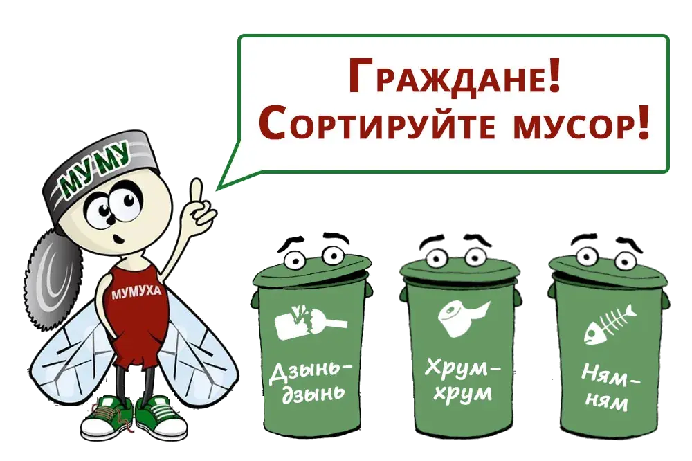

Задания экологического марафона
1 задание: Эко-IQ.

Задание представляет собой видео-вопрос на экологическую тематику, ответ на который команда должна представить в виде эссе.
Срок выполнения задания: 15.04-21.04.2022 г.
Критерий оценивания:
-
2 балла - вопрос раскрыт полностью.
-
1 балл - есть замечания.
-
0 балл - вопрос раскрыт неверно.
Форма ответа в виде эссе:
| Номер видео-вопроса: | Название команды: |
|---|---|
| Дата сдачи работы: | |
2 задание: Эко-реклама.

Необходимо разработать обложку к фильму одной из предложенных тем:
-
"Ожидаются осадки в виде мусора".
-
Генеральная уборка для Вселенной.
-
Грязный космос: кто мусорит и не убирает во Вселенной.
Работа выполняется с использованием графических редакторов или в формате фото-истории.
Срок выполнения задания: 22.04-28.04.2022 г.
Критерий оценивания:
-
2 балла - обложка уникальна и полностью соответствует теме.
-
1 балла - работа выполнена, но не является уникальной.
-
0 балл - работа не соответствует предложенному названию.
3 задание: #Trashtag.
Выбрать действие экологического характера, выполнить его и выложить пост ДО и ПОСЛЕ в группу экологического сектора РТК, отметив официальную страницу колледжа.
Деятельность выполняется студентами самостоятельно, при необходимости проводится консультация. В качестве природоохранной деятельности можно выбрать:
В качестве природоохранной деятельности можно выбрать:
-
Уборку территории или закрепленного кабинета.
-
Изготовление кормушек для птиц.
-
Помощь приюту бездомных животных.
-
Посадка цветов или деревьев.
-
Иное действие природоохранного характера.
Срок выполнения задания: 22.04-28.04.2022 г.
Критерий оценивания:
-
2 балла - работа выполнена полностью.
-
1 балл - работа выполнена, но не соблюдены все условия.
-
0 балл - работа не выполнена.
Образец выполнения фотоотчета:
До

После
4 задание: Полезный сбор.
Каждой команде достается один из вариантов сбора при помощи жребия (сбор макулатуры; крышек от бутылок; пластиковых бутылок). Собранный материал сдать в образовательную организацию в указанное место.
Сбор макулатуры - не менее 1 коробки от бумаги формата А4.
Сбор крышек - не менее одной 5 л бутылки, наполненной чистыми крышечками.
Сбор пластиковых бутылок - не менее 50 пластиковых бутылок.
Срок выполнения задания: 16.04-12.05.2022 г.
Критерий оценивания:
-
2 балла - сбор произведен в полном объеме.
-
1 балл - работа выполнена, но не добросовестно.
-
0 балл - работа не выполнена.
5 задание: игра «Дебаты».

Срок подготовки к игре: 12.05-15.05.2022 г.
Критерий оценивания:
-
5 баллов - команда грамотно аргументировала свою точку зрения, успешно провела защиту.
-
3 балл - команда хорошо аргументировала свою точку зрения, однако отстоять свою позицию не получилось.
-
1 балл - команда приняла участие, но не в полной мере справилась с задачей.